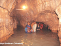

THE CHITRAKOOT TOWN
AREA
: 382 Km
2
ALTITUDE
: 203 METERS ABOVE AMS LINE
POPULATION
: 4,00,542 (2001)
SEASON
: JULY - MARCH
About the city :
Celebrated in ballads and scriptures for its natural beauty and closly associated with the epic Ramayana, Chitrakoot or "the hill of many wonders" is a ballowed centre o pilgrimage.
Highlights of city :

1. KAMADGIRI
2.RAM GHAT
3. HANUMAN DHARA
4.JANKI KUND
5.GUPTA GODAWARI
6.SPHATIK SHILA